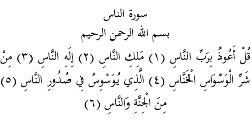

14

Nâs Suresi
Anlamı: Er-Rahman, er-Rahim Allah’ın adıyla
De ki, insanların Rabbine sığırım (1), insanların hâkimine, (2) insanların ilahına. (3). Sinsi vesvesecilerin (4), insanların kalplerine vesvese veren (5) o cinlerin ve insanların şerrinden. (6)
Açıklama: Rab, Allah’ın isimlerinden biridir, besleyip büyüten demektir.
Melik de Allah’ın isimlerinden biridir, bir şeyin her yönüyle sahibi ve hâkimi demektir.
İlah da Allah’ın isimlerinden biridir, kendisine itaat ve ibadet edilen, yani Mabud demektir.
Cinlerden olan şeytanlar insanın kalbine vesvese verdiği gibi, şeytanlaşan insanlar da verirler.
Vesvese, fısıltı halindeki şer tohumudur. Kişi kötü insanlarla beraber olunca hep kötülük hatırlar.